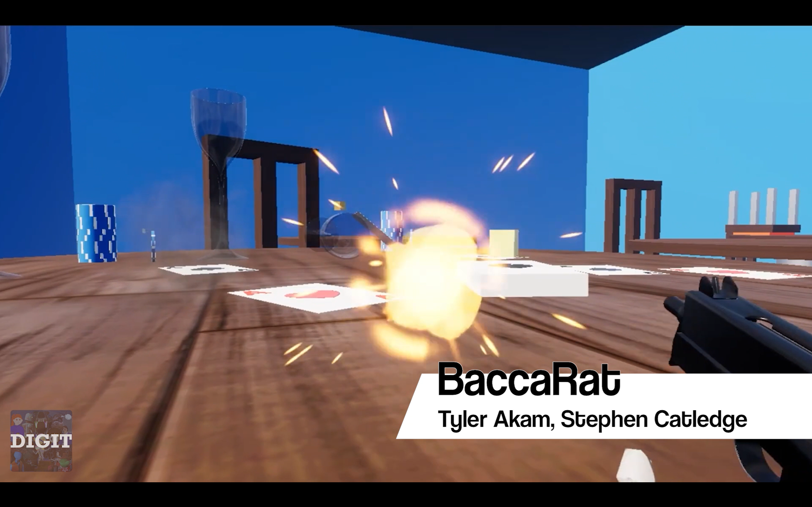
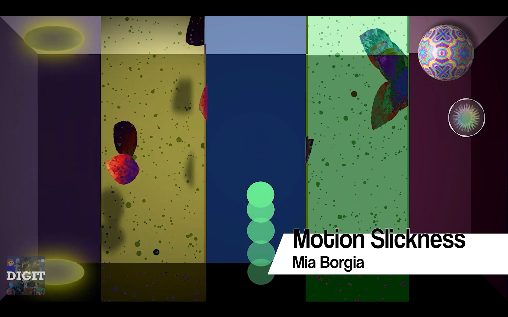
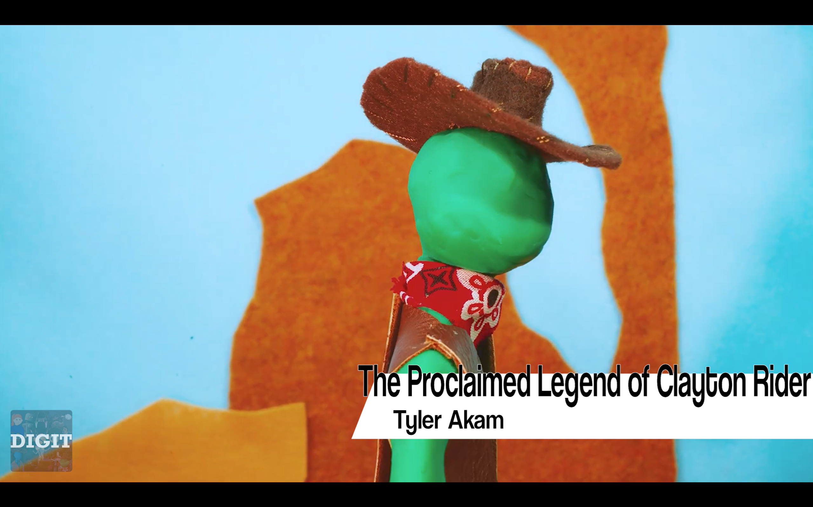

My GitHub profile---My Linked In profile
Reece Cullen Portfolio by Reece Cullen is licensed under CC BY-NC-SA 4.0


On this page, I'll showcase video work I've done, professionally or for fun.
I recently completed a trial edit for Wyatt Eiden, a social media influencer. It was fun to mimic a modern editing style! (Watch on YouTube here)
During the summer of 2024 until the end of the year, I worked with the College Knowledge Foundation as a Marketing Intern. I worked on redesigning their website, while also editing a ton of videos for social media and preparing other marketing materials. I've edited most episodes of their podcast, as well as a lot of the shorts that have been uploaded to their YouTube channel.
Also during the summer of 2024, I was a WebOps Student Team Member for Penn State Behrend's DIGIT
program (my major). I helped touch up their website, as well
as edited an awesome showcase video highlighting a lot of DIGIT students' creative projects,
also to be featured on their website homepage.



Since I started using the Adobe products for school, I've loved making videos in
Premiere. So for the last couple years I've been making video essays about whatever
topic I'm fixated on at the moment. It's been (and is) a lot of fun!
All this to say: Check out my
YouTube channel! :)
My GitHub profile---My Linked In profile
Reece Cullen Portfolio by Reece Cullen is licensed under CC BY-NC-SA 4.0